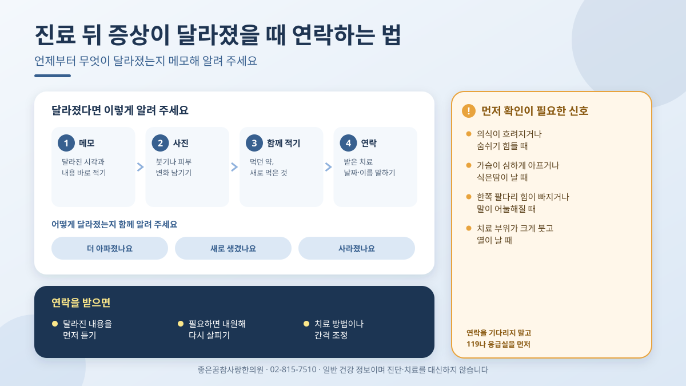

이종호 한의사 감수좋은꿈참사랑한의원 대표원장 (한의사 면허번호 19769)발행 2026-11-23 · 수정 2026-11-24
이 글의 차례
진료 뒤 증상이 달라졌다면 망설이지 말고 언제부터, 무엇이, 어떻게 달라졌는지 메모해 전화(02-815-7510)나 카카오톡 상담으로 알려 주세요. 가벼운 변화라도 구체적으로 알려 주시면 다음 진료 방법을 정하는 데 도움이 됩니다. 다만 숨이 차거나 가슴이 아프거나 한쪽 팔다리에 힘이 빠지는 증상은 연락을 기다리지 말고 응급실을 먼저 이용하세요.
왜 기록과 연락이 중요할까요
- 치료 뒤 반응은 사람마다 달라, 달라진 시점과 상황을 알면 원인을 가늠하기 쉬워집니다.
- 치료와 상관없는 다른 원인(음식, 운동, 감기)이 겹친 경우도 기록으로 구분할 수 있습니다.
- 가벼운 변화도 쌓이면 치료 방법을 조정하는 단서가 됩니다.
- 응급 증상은 시간이 중요해 연락보다 응급 진료가 먼저입니다.
먼저 이렇게 여쭙니다
- 증상이 달라진 시각과 그 전에 한 일(식사, 운동, 약 복용)은 무엇인가요?
- 더 아파졌나요, 새로 생겼나요, 사라졌나요?
- 지금 몸 상태와 일상에 지장이 있는 정도는 어떤가요?
- 받은 치료 날짜와 종류를 기억하시나요?
일상에서 먼저 해 볼 수 있는 것
- 달라진 시각과 내용을 휴대폰 메모에 바로 적어 두기
- 붓기나 피부 변화는 사진으로 남기기
- 평소 먹던 약이나 새로 먹은 것이 있으면 함께 적기
- 연락할 때 받은 치료 날짜와 이름을 함께 말하기
한의원에서 함께 살필 수 있는 경우
- 진료 뒤 한두 가지 반응이 달라졌을 때 그 전후의 생활을 함께 확인합니다.
- 반응이 애매할 때 다음 진료까지 지켜볼 점을 함께 정합니다.
- 불편이 이어질 때 진료를 앞당겨 상태를 살핍니다.
좋은꿈참사랑한의원에서는 연락을 받으면 달라진 내용을 먼저 듣고, 필요하다고 판단될 때 내원해 다시 살핀 뒤 치료 방법이나 간격을 조정합니다. 다른 의료기관 진료가 필요하다고 판단되면 안내합니다. 진료시간은 평일 09:30~20:00(점심 13:00~14:00), 토·일·공휴일 09:30~15:00입니다.
이렇게 기록해 오시면 상담이 쉬워집니다
- 달라진 날짜와 시각
- 달라진 증상과 그 정도
- 그 전후에 한 일, 먹은 음식과 약
- 붓기나 피부 변화 사진
이런 증상은 먼저 확인이 필요합니다
- 의식이 흐려지거나 숨쉬기 힘든 경우
- 가슴이 심하게 아프거나 식은땀이 나는 경우
- 한쪽 팔다리에 힘이 빠지거나 말이 어눌해지는 경우
- 치료 부위가 크게 붓고 열이 나는 경우
이렇게 갑작스럽고 심한 증상은 연락을 기다리지 말고 응급실을 먼저 이용하세요. 복용 중인 약은 처방한 의사와 상의 없이 줄이거나 끊지 않습니다.

여쭙는 것
- 증상이 달라진 시각과 그 전에 한 일(식사, 운동, 약 복용)은 무엇인가요?
- 더 아파졌나요, 새로 생겼나요, 사라졌나요?
- 지금 몸 상태와 일상에 지장이 있는 정도는 어떤가요?
생활에서 해 볼 것
- 달라진 시각과 내용을 휴대폰 메모에 바로 적어 두기
- 붓기나 피부 변화는 사진으로 남기기
- 평소 먹던 약이나 새로 먹은 것이 있으면 함께 적기
한의원에서 함께 살필 것
- 진료 뒤 한두 가지 반응이 달라졌을 때 그 전후의 생활을 함께 확인합니다.
- 반응이 애매할 때 다음 진료까지 지켜볼 점을 함께 정합니다.
- 불편이 이어질 때 진료를 앞당겨 상태를 살핍니다.
먼저 확인이 필요한 신호
- 의식이 흐려지거나 숨쉬기 힘든 경우
- 가슴이 심하게 아프거나 식은땀이 나는 경우
- 한쪽 팔다리에 힘이 빠지거나 말이 어눌해지는 경우
한눈에 보는 표
| 구분 | 핵심 |
|---|---|
| 여쭙는 것 | 증상이 달라진 시각과 그 전에 한 일(식사, 운동, 약 복용)은 무엇인가요? 더 아파졌나요, 새로 생겼나요, 사라졌나요? |
| 생활에서 해 볼 것 | 달라진 시각과 내용을 휴대폰 메모에 바로 적어 두기 붓기나 피부 변화는 사진으로 남기기 |
| 한의원에서 함께 살필 것 | 진료 뒤 한두 가지 반응이 달라졌을 때 그 전후의 생활을 함께 확인합니다. 반응이 애매할 때 다음 진료까지 지켜볼 점을 함께 정합니다. |
| 먼저 확인이 필요한 신호 | 의식이 흐려지거나 숨쉬기 힘든 경우 가슴이 심하게 아프거나 식은땀이 나는 경우 |
자주 묻는 질문
하루 이틀 지켜봐도 되나요?
가벼운 변화라면 지켜보시되 달라진 내용을 적어 두세요. 걱정되거나 심해지면 바로 연락해 주세요.
진료 시간이 아닐 때도 연락할 수 있나요?
전화(02-815-7510)나 카카오톡 상담으로 남기실 수 있으며, 답변 가능한 시간은 한의원에 확인해 주세요. 급한 증상은 응급실을 이용하세요.
연락하면 무엇을 해 주나요?
달라진 내용을 듣고 필요하면 앞으로의 진료 방법을 함께 정합니다.
좋은꿈참사랑한의원은 재진 때 지난번 이야기부터 이어서 여쭙니다. 진료시간과 예약은 오시는 길에서 확인하세요.
어디서 상담받을 수 있나요?
좋은꿈참사랑한의원은 서울 동작구 만양로2길 2 신성빌딩 3층·5층(서울 동작구 상도동, 7호선 상도역 3번 출구 근처)에 있습니다. 한의사 3명(이종호 대표원장, 조영기 수석진료원장, 정원영 진료원장)이 진료합니다. 진료시간은 평일 09:30~20:00(점심 13:00~14:00), 토·일·공휴일 09:30~15:00이며, 방문 전 전화로 확인을 권합니다. 예약은 네이버 예약, 카카오톡 상담, 전화 02-815-7510로 받습니다.
이 글은 일반적인 건강 정보이며 개인의 진단이나 치료를 대신하지 않습니다. 증상이 있거나 복용 중인 약이 있다면 진료를 통해 확인하세요. 치료 효과는 개인마다 다를 수 있습니다.
작성 기준: 일반적으로 알려져 있는 건강 정보를 참고해 정리했습니다(대표원장 감수). 증상 기록은 1~2주 동안 하루 1회, 비슷한 시간에 적어 오시면 지난 상태와 비교하기 쉽습니다.